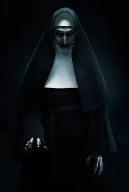
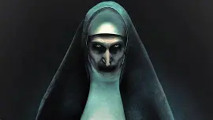

GILLERMO – Grupo 503
Monja
 El disfraz de monja representa serenidad, devoción y espiritualidad. Tradicionalmente compuesto por una túnica negra con detalles blancos, este atuendo transmite respeto y sobriedad. Ideal para quienes buscan un disfraz con significado religioso o una estética clásica, puede adaptarse tanto a contextos serios como a temáticas más creativas. Los colores suaves como el gris y el azul cielo pueden complementar el fondo o los accesorios para reforzar la atmósfera pacífica del personaje.
Religioso / Clásico / Espiritual